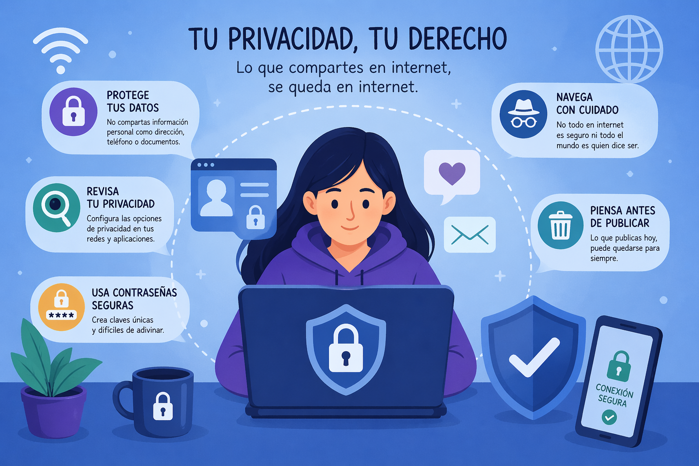

La seguridad total no existe. Incluso las máquinas no conectadas pueden ser atacadas con diferentes métodos. Existen diferentes formas de protegerse de determinados ataques y actividades de espionaje de las comunicaciones.
AUTENTICACIÓN: Para acceder a ciertos servicios online es necesario utilizar unos datos de acceso, que son en la mayoría de los casos un Usuario y una contraseña. Consejos para elegir contraseña:
• Escoge una que tenga como mínimo 8 caracteres.
• Debe combinar, al menos, mayúsculas, minúsculas y números.
• Procura que sea fácil de recordar y escribir.
• No incluyas el nombre de usuario, datos personales ni secuencias de teclas.
• Utiliza diferentes contraseñas para cada servicio digital y cámbialas con frecuencia, sin utilizar una secuencia predecible.
• Modifica siempre las contraseñas creadas por los fabricantes de dispositivos o los administradores.
NAVEGACIÓN SEGURA: Para navegar por diferentes páginas web se utilizan fundamentalmente dos protocolos: http y https. Https es un protocolo cifrado, es decir, la información se envía codificada con una clave, de forma que si un atacante es capaz de capturarla no podrá leerla, porque no tendrá la clave para descifrar el mensaje.
REDES PRIVADAS VIRTUALES: Estas redes crean, a través de Internet, un túnel virtual de conexión entre un ordenador y una red local. Evita que el proveedor de acceso a Internet pueda conocer el contenido de las comunicaciones